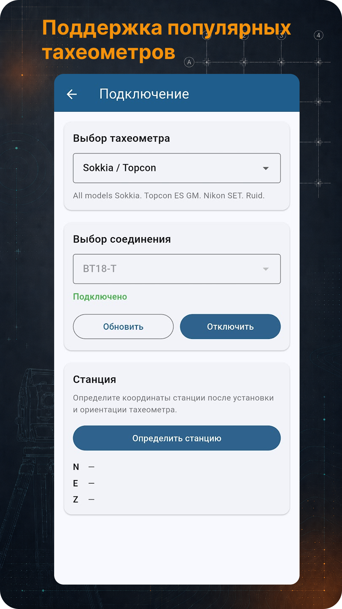
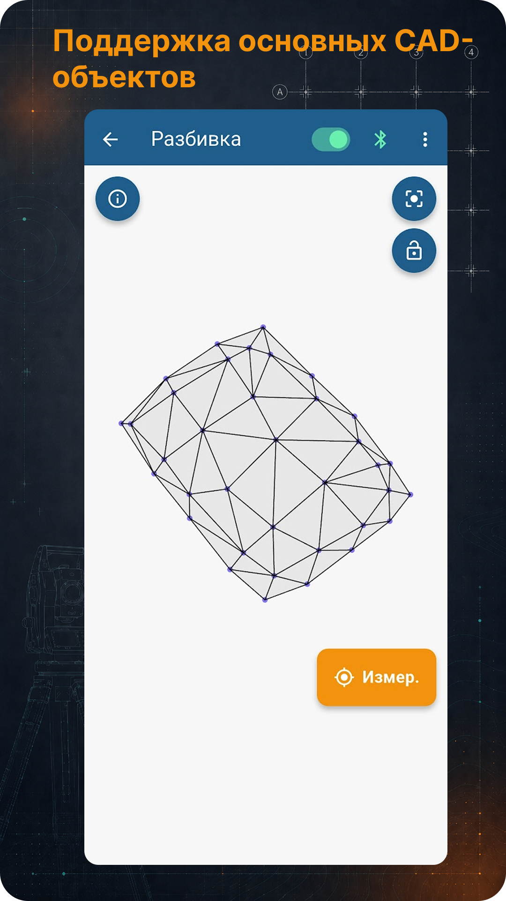

Estação total
Conecte instrumentos compatíveis e receba as coordenadas dos pontos medidos.
TS Go!
Abra um projeto DXF, conecte uma estação total, meça um ponto e obtenha sua posição em relação ao projeto: linha, offset, cota, locação e levantamento.
Uma ferramenta de campo para topógrafos: estação total, projeto, DXF, locação e controle.
Recursos
O aplicativo segue um fluxo simples: abra um projeto, selecione um objeto, meça um ponto e entenda o resultado imediatamente.
Conecte instrumentos compatíveis e receba as coordenadas dos pontos medidos.
Abra arquivos de locação, exiba objetos CAD e trabalhe com linhas, pontos, arcos e círculos.
Parâmetros de campo em relação ao projeto: estaca, offset, acima/abaixo, esquerda/direita, frente/trás e ângulo de giro.
Crie linhas base de trabalho a partir de pontos e inverta rapidamente a direção.
Um espaço simples para pontos medidos, salvamento, exportação e limpeza.
O controle de cotas em relação a superfícies 3D de projeto está sendo desenvolvido nas versões atuais.
Capturas de tela
A galeria de capturas rola horizontalmente.




Compatibilidade
O TS Go! inclui perfis de comunicação para famílias comuns de estações totais e recebe as coordenadas medidas diretamente do instrumento.
Perfis para instrumentos que utilizam o protocolo SET.
Perfis de comunicação Leica GSI e GeoCOM.
Perfis Nikon para modelos compatíveis da Nikon, Spectra Precision e Trimble.
Perfil Topcon GTS e protocolos compatíveis de determinados modelos South, Kolida, CHC, Sanding e Gowin.
A compatibilidade depende do modelo, firmware, protocolo selecionado e parâmetros Bluetooth/COM. Teste a comunicação com o instrumento específico antes do trabalho de campo.
Acesso
O aplicativo está disponível na RuStore e como APK no site oficial. Os termos de acesso aparecem no aplicativo. O acesso PRO tem prazo limitado e não é renovado automaticamente.